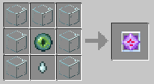
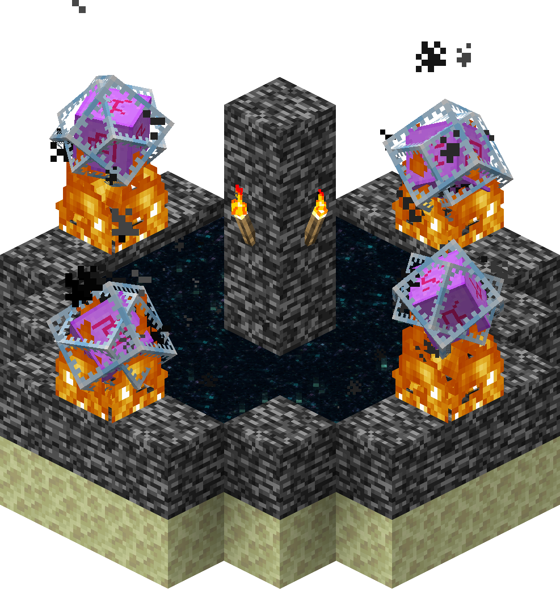

End Crystal |
An end crystal is both an item and an entity found in the End.
|  | This is how you craft an End Crystal |
Healing The Dragon
Their primary purpose is to recharge the health of the ender dragon, who gains a charge from the nearest crystal within a cuboid extending 32 blocks from the dragon in all directions. The dragon is healed 1♥ each half-second. If multiple ender dragons are spawned, an end crystal can affect multiple dragons at the same time. The healing beam is neither obstructed nor is its power diminished by entities or blocks.
Respawning the ender dragon
As items, end crystals may be placed on bedrock and obsidian, if the two blocks above the bedrock or obsidian block are air or replaceable blocks and no other entities intersect the area. If four are placed on the end exit portal, one on each of the flat sides, the crystals respawn the original end crystals on the obsidian pillars, as well as resurrect the dragon itself, before exploding. The top of each pillar also explodes, destroying any player-placed blocks. This happens even if TNT explosions are turned off in settings.
This is how you respawn the dragon